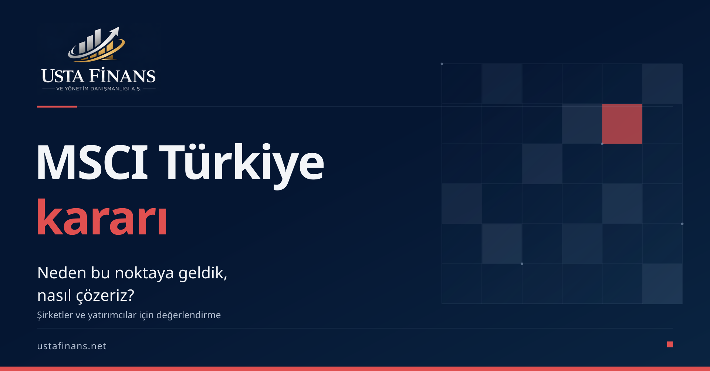

MSCI Türkiye kararı: Neden bu noktaya geldik, nasıl çözeriz?
Bülent Usta | Usta Finans

MSCI’nin Türkiye endekslerine ilişkin kararı, şirket yönetimleriyle borsa yatırımcılarının aynı gelişmeye farklı açılardan bakmasını gerektiriyor. Yönetimler sermayeye erişimi ve bilgi kalitesini; yatırımcılar portföylerindeki şirketlerin likiditesini, sahiplik yapısını ve değerleme varsayımlarını değerlendirmeli. Kalıcı çözüm için de kararın gerekçesini doğru anlamak gerekiyor. Bu yazıda konuyu dört soruyla ele alıyorum.
Önce kapsamı netleştirelim. MSCI, 15 Ekim 2026’da endeks gözden geçirmeleri veya kurumsal işlemlerden kaynaklanan bazı değişiklikleri derhal ve yeni duyuruya kadar dondurdu. Kapsam; FIF ve endekste kullanılan pay sayısı (NOS) artışları, Türkiye IMI endeksine eklemeler ve büyüklük segmentleri arasında yukarı geçişler. Mevcut piyasa sınıfı değiştirilmedi. Haziran 2027’ye kadar yeterli ilerleme görülmezse, gelişmekte olan piyasadan sınır veya bağımsız piyasa statüsüne olası geçiş için istişare dahil ek adımlar değerlendirilebilecek. [1]
Neden bu noktaya geldik
MSCI’nin hazirandaki değerlendirmesinde, uluslararası kurumsal yatırımcıların bazı küçük halka açık şirketlerle bağlantılı fonlar üzerinden olası koordineli işlemlere ilişkin kaygıları yer alıyordu. Temel sorun, açıklanan serbest dolaşımın gerçekte bağımsız yatırımcıların erişebildiği payları ne ölçüde yansıttığıydı. Nihai sahipliğin görünürlüğü, işlem gözetimi ve uygulamanın tutarlılığı bu nedenle önem taşıyor. Bunlar belirli piyasa işleyişi kaygılarıdır; bütün şirketler hakkında kanıtlanmış ihlal tespiti olarak okunmamalı. [2]
Aynı değerlendirme, fonların tuttuğu şirket paylarının, nihai sahipleri zaten serbest dolaşım dışında bırakılan taraflarsa hesaplamadan çıkarılmasına yönelik SPK çerçevesini de kayda geçiriyordu. Yatırımcıların görmek istediği, düzeltilen hesaplamaların uygulamadaki etkisiydi. [2]
MSCI, Türkiye’de atılan ilk adımları da kabul ediyor. Ancak bunların sahadaki etkisinin, sürdürülebilir yaptırımın ve serbest dolaşımın bağımsız doğrulanabilirliğinin görülmesi için daha fazla zamana ihtiyaç bulunduğunu belirtiyor. [1]
Benim değerlendirmem, burada şirketlerin açıkladığı rakam ile yatırımcının o rakama duyduğu güven arasındaki ilişkinin öne çıktığı yönünde. Bir pay farklı tüzel kişilerde görünürken ekonomik kontrol aynı yerde toplanıyorsa, yalnızca isim listesiyle yapıyı anlamak zorlaşabilir. Yatırımcının veriyi doğrulayabilmesi, o piyasada sağlıklı karar verebilmesinin koşullarından biridir.
Bu nedenle sorunu yalnızca tek günlük fiyat hareketiyle ölçmek yetersiz kalır. Bir düzenlemenin yayımlanmasıyla etkili biçimde uygulanması arasında fark vardır. Çözümün başarısını, yeni kuralın varlığı kadar işlemlerde tutarlı sonuç üretmesi ve dışarıdan kontrol edilebilmesi üzerinden değerlendirmek gerekir. Bu ayrım, güvenin nasıl yeniden güçlendirilebileceğini de gösterir.
Şirket yönetimleri için ne anlama geliyor
Endekse giriş veya üst segmente geçiş beklentisi, yatırımcı iletişiminde kullanılan bir unsur olabilir. Böyle bir beklentiyi finansman planının kesinleşmiş parçası gibi ele alan yönetimler varsayımlarını gözden geçirmeli. Şirketin faaliyetlerinden ürettiği nakit, borç vadeleri ve teyitli kaynakları ayrı; gerçekleşmesi dış koşullara bağlı beklentiler ayrı izlenmeli.
Burada önemli bir finansman ayrımı var. İkincil piyasada bir yatırımcının mevcut hisseyi diğerinden satın alması, şirkete otomatik olarak yeni nakit sağlamaz. [6] Finansmana etkisi değerlendirilirken olası sermaye ihracı, işlem koşulları ve şirketin kaynak ihtiyacı ayrıca ele alınmalıdır.
İlk çalışma, ortaklık yapısıyla yatırımcıya sunulan belgelerin tutarlılığını kontrol etmek olmalı. Doğrudan ve dolaylı sahiplik ilişkileri, kaynak kayıtlar ve güncelleme tarihleri açıklanabilmeli. Faaliyet raporu ile yatırımcı sunumu farklı dönemleri kapsıyorsa, aradaki değişiklik görünür kılınmalı. Finans, hukuk ve yatırımcı ilişkileri ekipleri aynı son sürüm üzerinden konuşmalı.
Finansman açısından önerim, beklenen sermaye girişi gecikirse ne olacağını test etmek. Hangi ödeme karşılanacak, hangi yatırım ertelenebilecek, hangi kaynak gerçekten kullanılabilir? Alternatiflerin toplam maliyeti ve teminat ihtiyacı şirketin kendi verileriyle değerlendirilmeli. Bu haber, her işletmenin kredi maliyetinin aynı ölçüde değişeceğini söylemek için yeterli değildir.
Yönetim kurulu bu çalışmayı belge sayısıyla ölçmemeli. Açıklığa kavuşan ortaklık ilişkisi, giderilen rapor farkı ve güncellenen nakit senaryosu gibi somut sonuçlar istemeli. Her açık konu için sorumlu kişi ve tamamlanma tarihi belirlenmeli. Halka açık olmayan, ancak ortak arayan veya halka arza hazırlanan işletmeler de aynı hazırlık disiplininden yararlanabilir.
Borsa yatırımcıları için ne anlama geliyor
Önce teknik bir ayrım önemli. FIF, yabancı yatırımcılara açık payları serbest dolaşım ve yabancı sahiplik sınırları çerçevesinde yansıtan endeks katsayısıdır; gerçekleşmiş yabancı yatırımcı sahiplik oranı değildir. Endeks ağırlıkları serbest dolaşıma göre düzeltilmiş piyasa değeriyle ilişkilidir. Dolayısıyla belirli girdilerdeki artışların dondurulması, fiyatın veya ağırlığın sabit kalacağı anlamına gelmez. [3]
Olası talep etkisini değerlendirirken yatırımcı türlerini ayırmak gerekir. Endeks izleyen fonlar portföylerini oluştururken ilgili endeksi referans alır. [5] Yeni girişlere ve segment yükselişlerine bağlanan görünürlük veya ilave talep beklentisi bu nedenle zayıflayabilir. Bu, kararın olası etkisine ilişkin bir değerlendirmedir; açıklanmış bir fon çıkışı tutarı değildir.
Aktif yönetilen fonların ve bireysel yabancı yatırımcıların kararları aynı kurala bağlı değildir. Şirketin kârlılığı, borçluluğu, işlem derinliği ve fiyatı ayrıca önem taşır. Bu yüzden bütün yabancı yatırımcıların aynı anda aynı yönde işlem yapacağını varsaymak yanıltıcı olur. Belirli bir hisse için kesin yükseliş veya düşüş sonucu çıkarmak da doğru olmaz.
Yatırımcı, elindeki şirketin mevcut endeks konumunu ve beklentisinin hangi varsayıma dayandığını kontrol etmeli. Günlük işlem hacmi yüksek görünse bile büyük bir pozisyonun fiyatı etkilemeden alınıp satılıp satılamayacağı ayrıca sorgulanmalı. Ortaklık açıklamaları, finansal tablolar ve kamuya açık duyurular birlikte okunmalı. Sosyal medyada dolaşan kesin fon girişi veya çıkışı hesaplarının veri kaynağı incelenmeli.
İleriye dönük sınıflandırma ihtimali, risk senaryolarında izlenmesi gereken bir başlık. Ancak Haziran 2027’yi otomatik bir sınıf değişikliği tarihi gibi kullanmak hatalı olur. [1] Yatırımcının yapabileceği, tek bir sonuca bağlanmış varsayım yerine farklı koşullarda portföyünün ne kadar likit ve ne kadar yoğunlaşmış kaldığını değerlendirmektir.
Bu sorunu nasıl çözeriz
MSCI’nin haziranda aktardığı beklentiler somuttu: ayrıntılı ve zamanında nihai sahiplik açıklaması; koordineli işlemlere karşı güçlü gözetim ve yaptırım; serbest dolaşım yapısı bozulmuş menkul kıymetlerin belirlenmesi ve ele alınması için şeffaf kurallar. [2]
Çözümü düzenleyici kurumlar, piyasa altyapısı ve şirketler birlikte ele almalı. Benim önerim, tartışmayı kontrol edilebilir sonuçlara bağlamak. Nihai ekonomik sahipliğin, yani payın arkasındaki gerçek kontrolün anlaşılabildiği veri; bu verinin bağımsız kontrolü ve tespit edilen sorunlara tutarlı müdahale aynı çalışma içinde düşünülmeli. Yeni yükümlülüklerin hukuki kapsamını yetkili kurumlar belirler.
Düzenleyici tarafta öncelik, açıklama kurallarının anlaşılır ve karşılaştırılabilir olması, işlem gözetiminin etkin işlemesi ve ihlal tespitlerinin öngörülebilir süreçlerle ele alınması olmalı. Şirketler veya menkul kıymetler farklı muamele görecekse ölçütler önceden açık olmalı. Böylece piyasa katılımcısı hangi davranışın hangi sonuca yol açacağını değerlendirebilir.
Şirketler kendi kontrol edebildikleri alanlardan başlamalı. Ortaklık yapısındaki belirsizlikleri gidermek, ilgili açıklamaların dayanaklarını korumak ve yatırımcı sorularına tutarlı cevap vermek bu alanların başında geliyor. Verinin hazırlanmasıyla onaylanması farklı kişilerin kontrolünden geçebilir. Karmaşık ilişkilerde bağımsız inceleme gerekiyorsa konusu, sınırı ve bulguları açıkça belirlenmeli.
İlerlemenin görünür olması da önemli. Önerim, yalnızca yapılan düzenlemeleri sıralamakla yetinmeyen bir değerlendirme yaklaşımı benimsenmesi. Veri tutarlılığı iyileşti mi, eksik açıklamalar tamamlandı mı, uygulama piyasa genelinde aynı ölçütlerle işliyor mu? Gizlilik ve hukuki sınırlar korunarak yayımlanabilecek sonuçlar, piyasanın değerlendirme yapmasına yardımcı olabilir. Bunlar kesin bir MSCI takvimi veya sonuç garantisi oluşturmaz.
Borsa yatırımcıları açısından çözümün kişisel tarafı, bilgi kaynağını doğrulamak ve riskleri taşıyabilecekleri ölçekte yönetmek. Şirket yönetimleri açısından ise doğrulanabilir bilgi üretmek ve finansman planını belirsizliğe dayanıklı hazırlamak. Piyasa genelinde güven, bu uygulamaların zaman içinde tutarlı sonuç vermesiyle desteklenebilir. Bugün yapılacak en yararlı iş, hangi eksikliğin kim tarafından ve nasıl giderileceğini somutlaştırmaktır.
Bülent Usta | Usta Finans
Bu yazı genel bilgilendirme ve değerlendirme amacı taşır. Yatırım tavsiyesi veya şirkete özel hukuki ve finansal görüş değildir.
Kaynaklar
- MSCI duyurusu • 15 Ekim 2026
- MSCI 2026 piyasa sınıflandırması değerlendirmesi • 23 Haziran 2026
- MSCI Global Investable Market Indexes Methodology • Mayıs 2026, s. 21 ve 97–101
- Bloomberg HT haberi • 16 Ekim 2026
- SEC Investor.gov aktif ve pasif fonlar • 29 Nisan 2025
- SEC Investor.gov ikincil piyasa tanımı • 16 Ekim 2026 tarihinde kontrol edildi